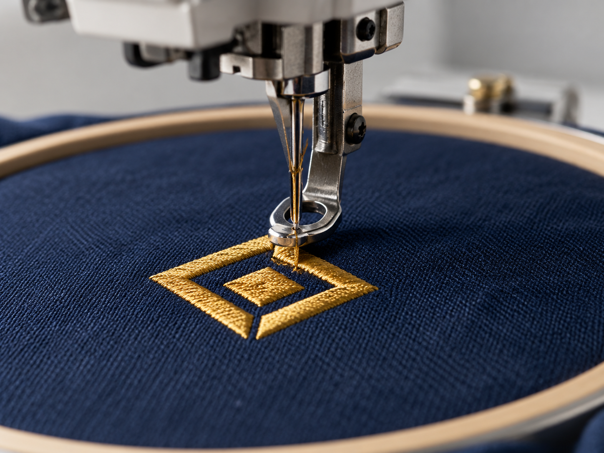
Embroidery
close-up of gold embroidery stitches on navy fabric beneath an embroidery needle
AI-generated referenceOpen original PNGFifteen individual AI-generated production-technique references, created 5 October 2026. These are illustrative garment details and process scenes, not photographs of Thonburi Master’s factory, equipment or completed orders.
The website uses the same images on Home and About through the shared production content.

close-up of gold embroidery stitches on navy fabric beneath an embroidery needle
AI-generated referenceOpen original PNG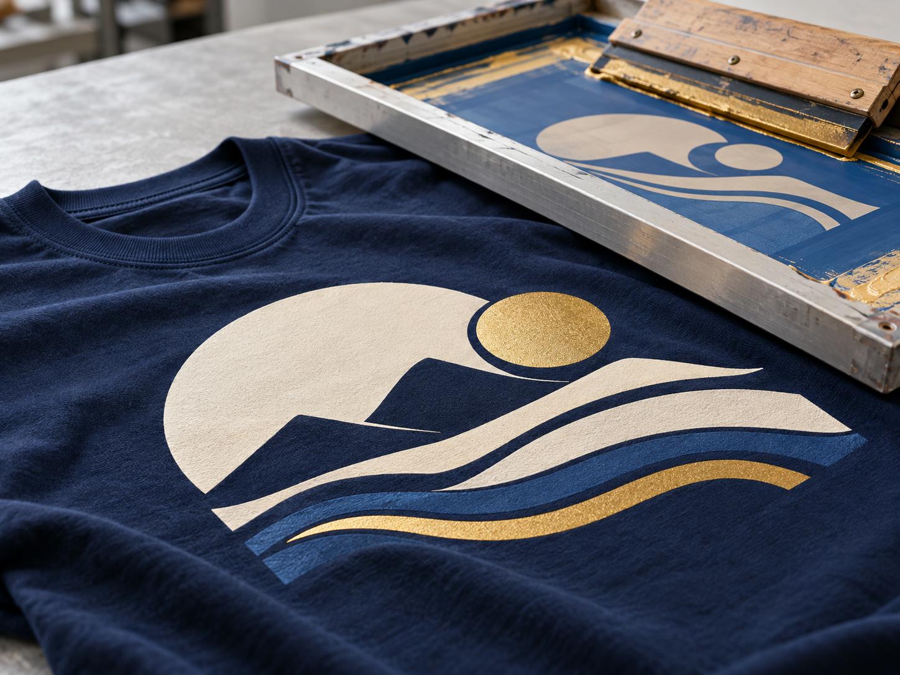
reference of opaque rubber screen printing on navy cotton with a screen and squeegee
AI-generated referenceOpen original PNG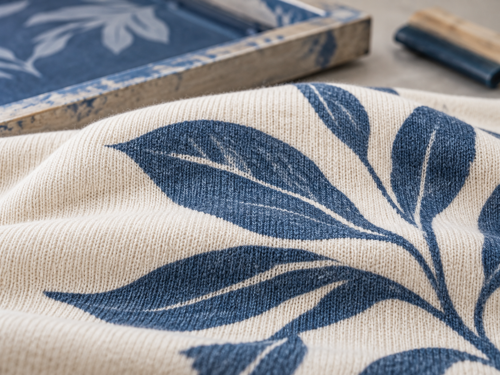
close-up of a matte blue water-based print with cotton knit texture visible
AI-generated referenceOpen original PNG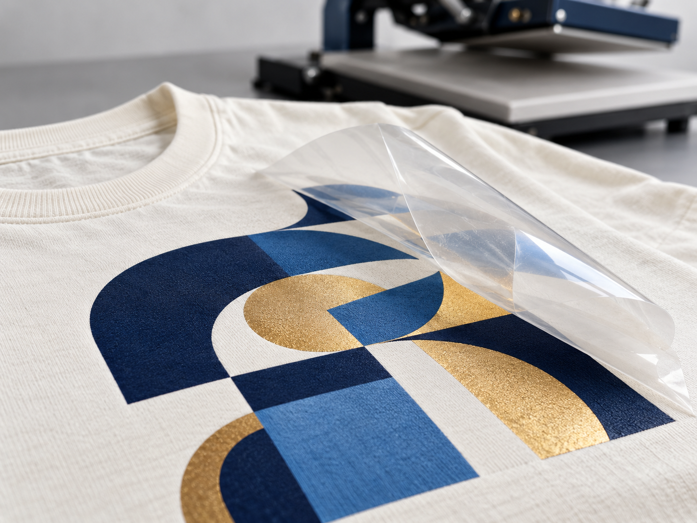
reference of transparent transfer film peeling away from a multicolour garment print
AI-generated referenceOpen original PNG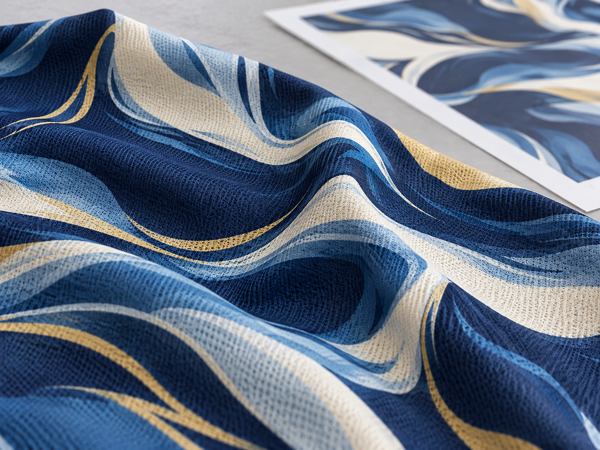
close-up of an all-over sublimation pattern on polyester sports fabric
AI-generated referenceOpen original PNGreference of washed indigo cotton seams with a garment-washer drum in the background
AI-generated referenceOpen original PNG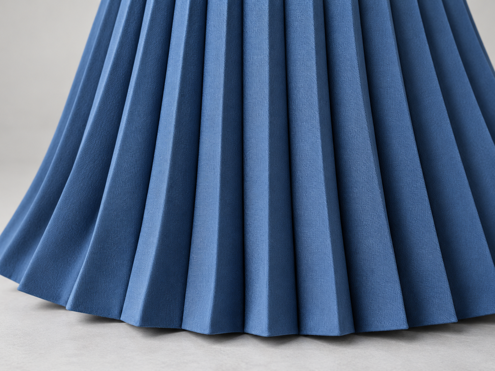
close-up of evenly pressed accordion pleats in blue fabric
AI-generated referenceOpen original PNG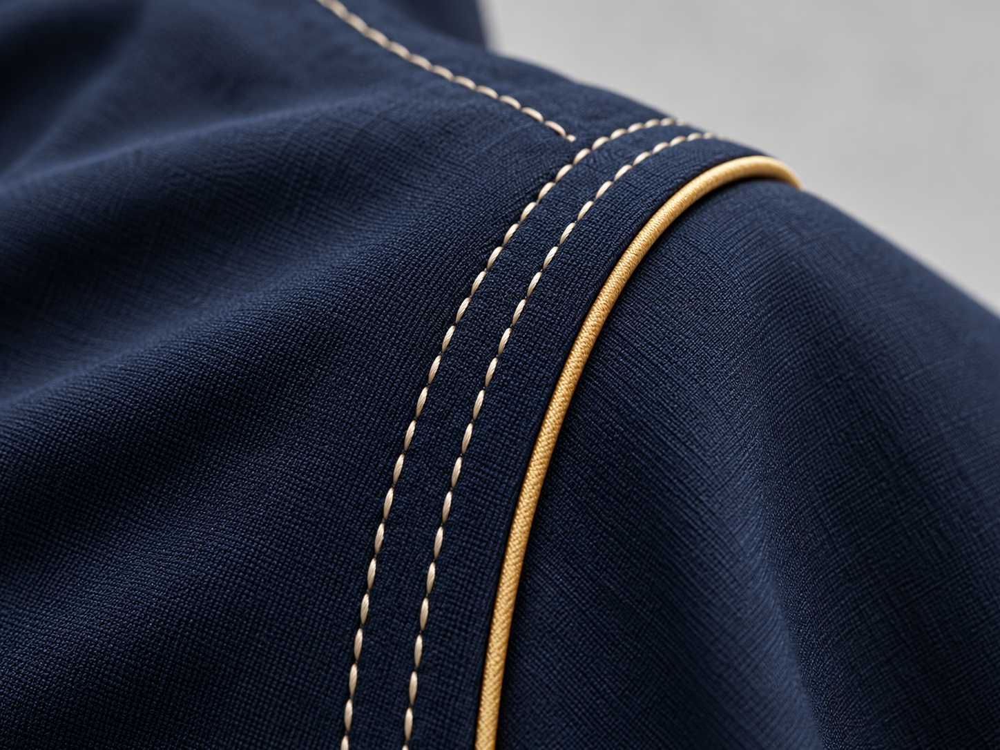
close-up of contrast topstitching and piping along a navy garment seam
AI-generated referenceOpen original PNG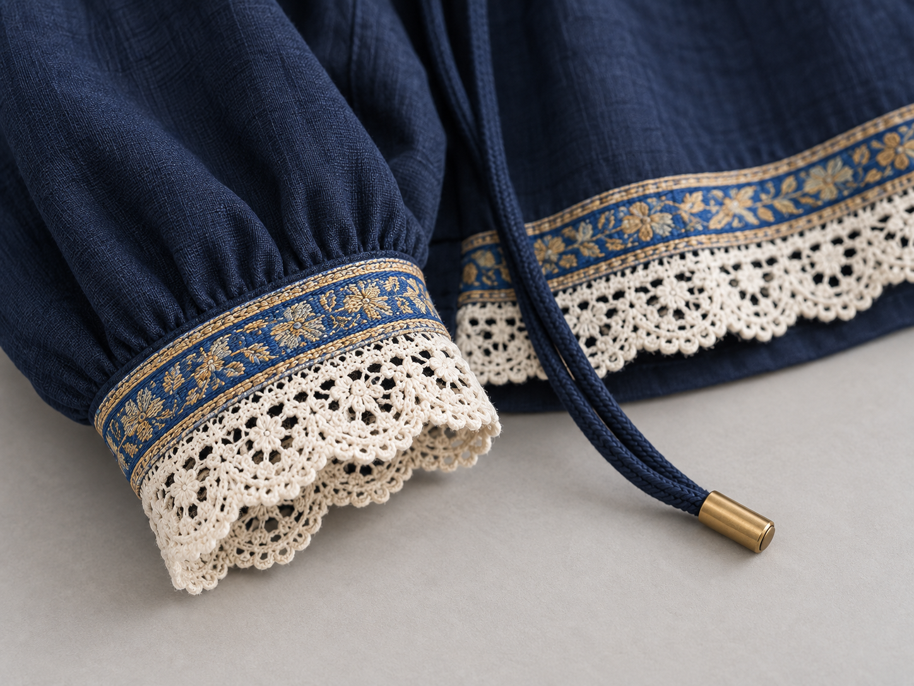
reference of lace, woven tape and drawcord trims on a navy garment edge
AI-generated referenceOpen original PNG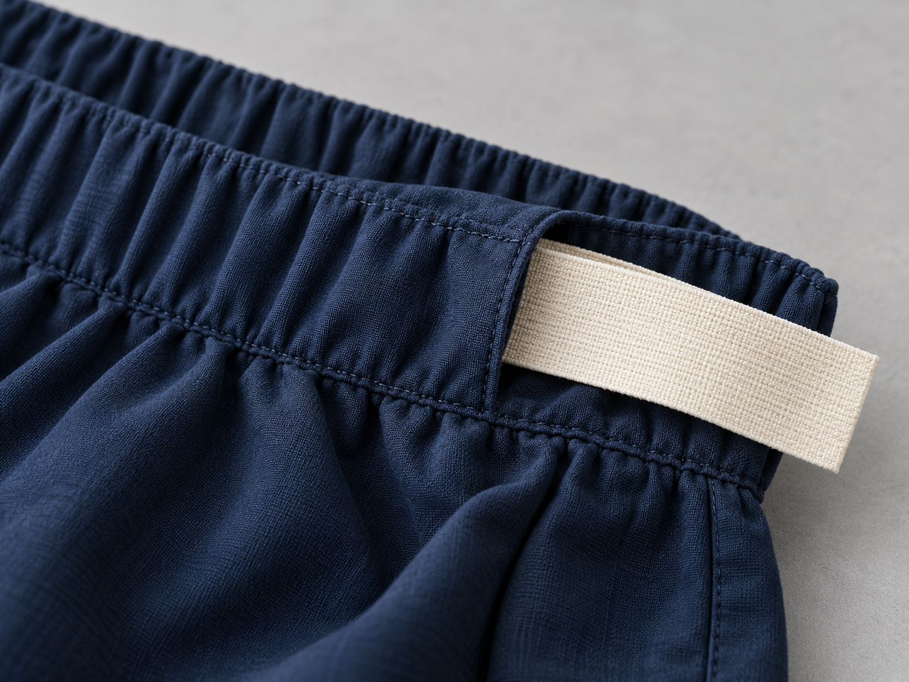
close-up of a woven elastic band inserted into a navy waistband casing
AI-generated referenceOpen original PNG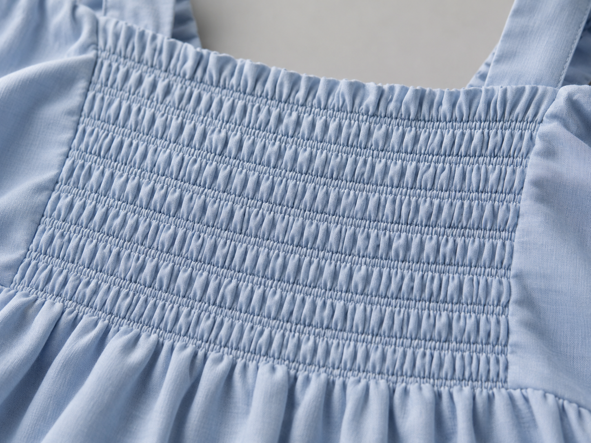
close-up of parallel elastic-thread smocking rows and gathered blue fabric
AI-generated referenceOpen original PNG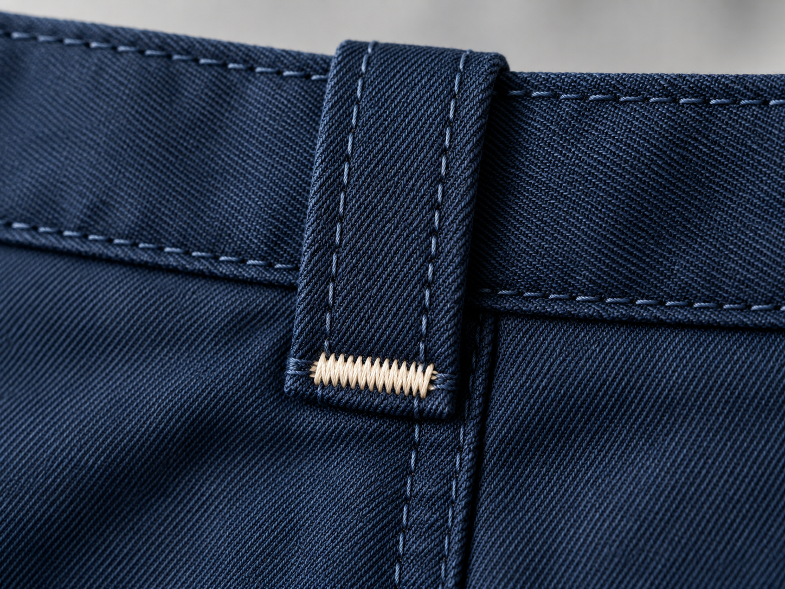
close-up of a dense bar tack reinforcing a navy trouser belt loop
AI-generated referenceOpen original PNG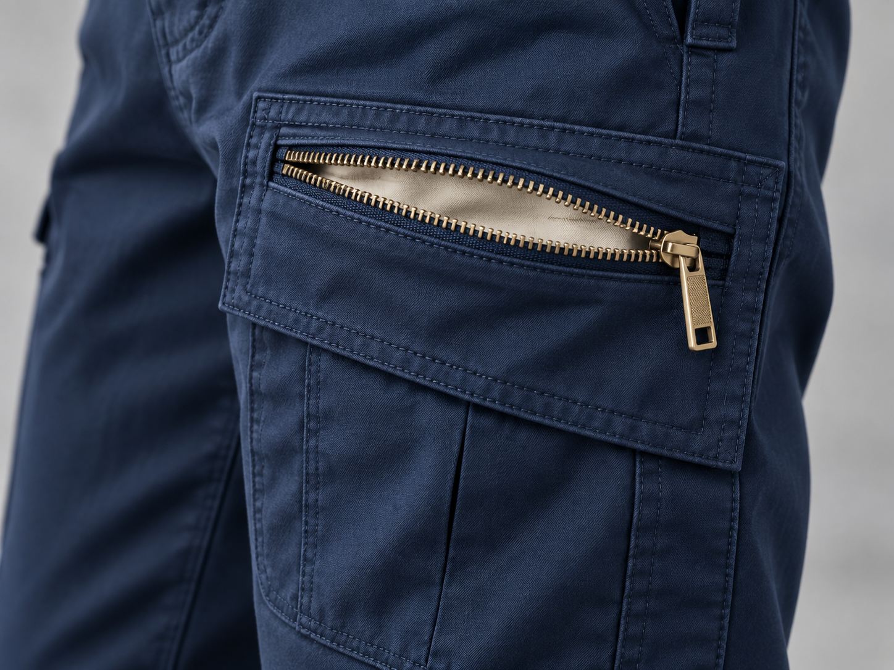
close-up of a neatly assembled zipped pocket in navy trouser fabric
AI-generated referenceOpen original PNG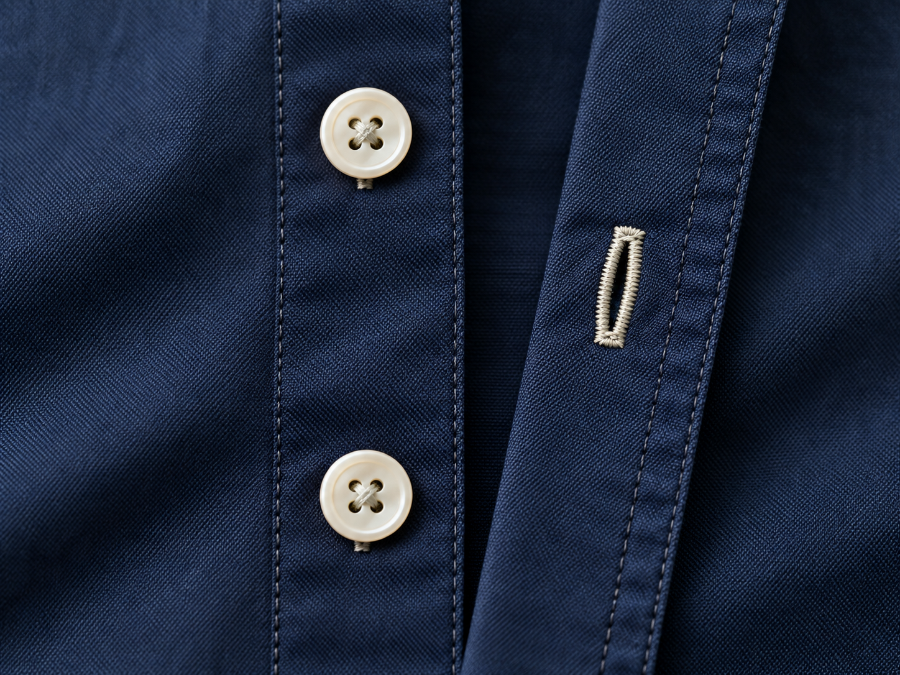
close-up of an attached shirt button and a stitched buttonhole on navy fabric
AI-generated referenceOpen original PNG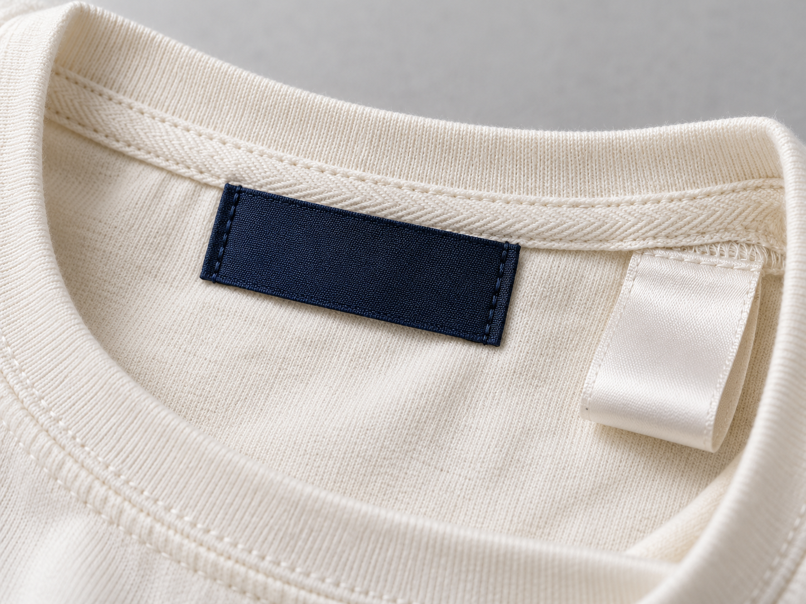
reference of woven neck and satin care labels sewn into garment seams
AI-generated referenceOpen original PNG